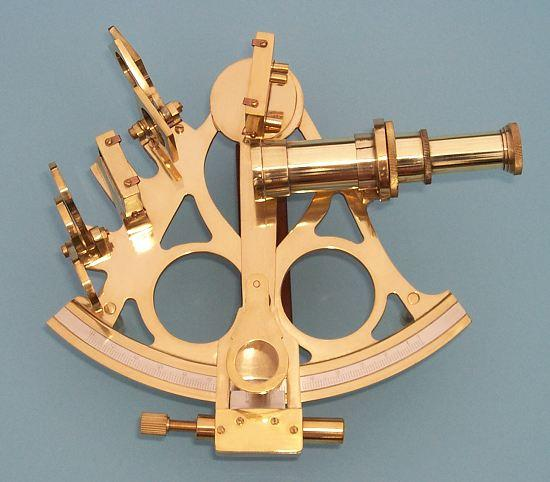

A sextant is an instrument with a graduated arc of 60° and a sighting mechanism, used for measuring the angular distances between objects. It is particularly used in navigation and surveying to measure the altitude of celestial objects above the horizon.
2. What is a Sextant?
A sextant is a tool that measures angles. Navigators use it to measure the angle between a visible object, such as the sun, a star, or the moon, and the horizon. By using mirrors and a scale, the sextant provides precise measurements that allow navigators to calculate their latitude while at sea.
It is a fundamental instrument for navigation, enabling sailors to determine their position accurately, even when far from land.
3. History of the Sextant
The modern sextant was invented in the 1730s by John Hadley (England) and Thomas Godfrey (America).
It built upon earlier tools, such as:
The cross-staff
The reflecting octant, designed by Isaac Newton
The sextant represented a major breakthrough in navigation, allowing for more precise measurement of celestial angles and longer ocean voyages with improved accuracy.
4. How to Use a Sextant
Hold the sextant vertically and look at the horizon through its telescope.
Move the index arm to bring a celestial object (sun, star, or moon) into view.
Align the reflected image of the object with the horizon line.
Read the angle on the graduated scale to obtain the altitude.
Use the measured angle in navigation calculations to determine latitude or distance between objects.
Accuracy depends on steady handling, proper calibration, and correct observation of the horizon.
5. Physical Principles
The sextant uses mirrors to bring the image of a celestial object into the same plane as the horizon.
The angle measured corresponds to the difference in elevation between the object and the horizon.
This angular measurement can then be translated into distance and position, using trigonometric calculations.
6. Applications

A classical sextant
Maritime navigation – determining latitude at sea
Surveying – measuring angles between landmarks
Astronomy – measuring the altitude of celestial objects
7. Advantages of the Sextant
Highly accurate compared to older instruments like the cross-staff
Works without electricity or modern technology
Portable and durable for long sea voyages
Conclusion
The sextant is a crucial tool in navigation and surveying, allowing precise measurement of angles between objects. Its invention in the 1730s revolutionized maritime travel, enabling sailors to navigate safely and accurately across the oceans. Even today, it remains a symbol of classical navigation skills and the intersection of physics and practical astronomy.